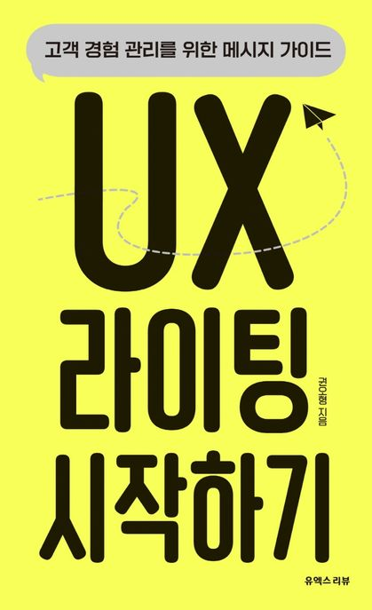

완성도는 디테일에서 나오는 것이다. 고객은 디테일에 감동하고 생각지 못한 부분에서 감동한다. 비슷한 예로 내로라하는 영화감독 거장들 역시 디테일에 집착한다. 그리고 결과물로 찬사를 받는다. 작은 차이가 큰 차이를 만든다는 믿음이 있어야 한다. 믿음은 실제로 이루어진다. 배신하는 법이 없다. 메시지의 완성도 역시 그렇다. 실체가 있는 좋은 믿음, 즉 디테일에 끊임없이 집착하고 매달리는 이유가 있어야 한다.
UX 라이팅 시작하기 (고객 경험 관리를 위한 메시지 가이드)
